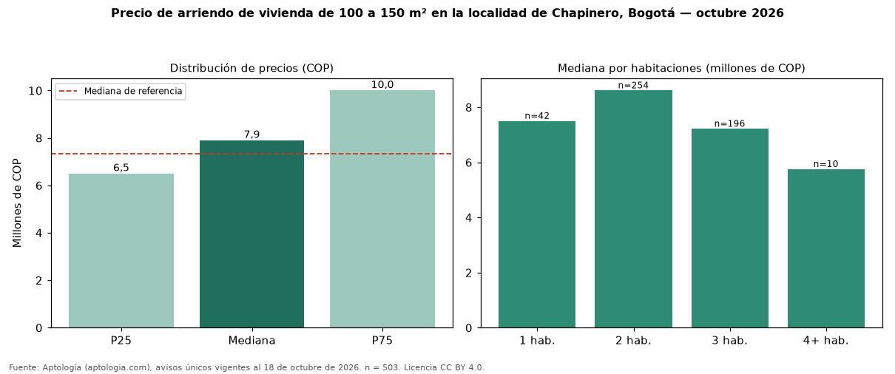

Precio de arriendo de vivienda de 100 a 150 m² en la localidad de Chapinero, Bogotá — octubre 2026
COP 7.900.000 al mes es la mediana de arriendo de vivienda de 100 a 150 m² en la localidad de Chapinero, Bogotá, según 503 avisos únicos. Frente a toda la oferta de arriendo en la localidad de Chapinero, Bogotá (COP 7.327.000), la diferencia es de 8 % por encima. Por metro cuadrado, la mediana es COP 65.833/m² (+5 % frente a COP 62.813/m²), puesto 1 de 7 localidades comparables. En todo Bogotá, la misma combinación tiene mediana COP 6.000.000 (+32 %). Cruzando con la oferta de venta equivalente, la rentabilidad bruta implícita es 9,0 % anual. Por habitaciones: 1 habitación, COP 7.500.000 (n = 42); 2 habitaciones, COP 8.605.000 (n = 254); 3 habitaciones, COP 7.215.500 (n = 196); 4 o más habitaciones, COP 5.750.000 (n = 10). El estrato más frecuente es 6. Datos abiertos CC BY 4.0 de Aptología; fuente y búsqueda de inmuebles: https://www.aptologia.com/arriendo-zona/bogota/localidad-chapinero. Archivos: PDF de 2 páginas, CSV con las cifras y gráfica PNG.

| Avisos únicos | 503 |
|---|---|
| Percentil 25 | COP 6.500.000 |
| Mediana | COP 7.900.000 |
| Percentil 75 | COP 10.000.000 |
| Mediana por m² | COP 65.833 |
Fuente: avisos vigentes de portales inmobiliarios recopilados por Aptología, deduplicados (mínimo 30 avisos únicos por celda). Precios pedidos, no cerrados. Fecha: 2026-10-18.